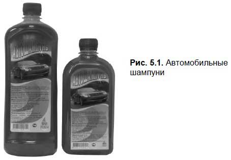
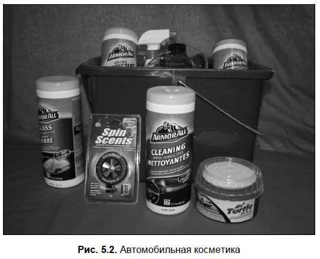

Техническое обслуживание автомобиля
Основной задачей технического обслуживания автомобиляявляется поддержание его в надлежащем внешнем виде и технически исправном состоянии. Основным отличием технического обслуживания от ремонта является то, что оно является профилактическим мероприятием. Что касается ремонта, то он выполняется при возникновении такой необходимости, т. е. когда явно обозначилась какая-либо неисправность или поломка, затрудняющая либо исключающая возможность эксплуатации транспортного средства.
Техническое обслуживание включает в себя следующие виды работ:
? смазочные;
? регулировочные;
? контрольно-диагностические;
? крепежные;
? заправочные;
? электротехнические.
Помимо перечисленных, при проведении технического обслуживания современного автомобиля могут выполняться и иные виды работ — в зависимости от марки машины, ее состояния и иных специфических факторов. Отметим, что при техническом обслуживании не обязательно выполняются сразу все перечисленные виды работ — все определяется текущей необходимостью, условиями эксплуатации и рекомендациями завода-изготовителя.
Виды технического обслуживанияВ зависимости от периодичности выполнения работ, их количества, сложности и трудоемкости существуют следующие виды технического обслуживания автомобилей:
? ежедневное (ТО);
? первое (ТО-1);
? второе (ТО-2);
? сезонное (СО).
Задача ежедневного технического обслуживания заключается в том, чтобы поддерживать автомобиль в надлежащем внешнем виде, отслеживать его заправку топливом, маслом, иными расходными материалами, а также контролировать обеспечение безопасности дорожного движения. Каждый раз перед поездкой водитель должен проверить:
? комплектность автомобиля;
? состояние его кузова;
? наличие и регулировку зеркал заднего вида;
? наличие и читаемость государственных регистрационных номерных знаков;
? исправность дверных замков, а также замков капота и багажника;
? исправность электрооборудования («дворники», приборы освещения и сигнализации);
? герметичность систем питания, смазки и охлаждения и наличие соответствующих расходных жидкостей;
? герметичность гидравлического привода тормозной системы;
? свободный ход рулевого колеса;
? работу контрольно-измерительных приборов.
Помни об этом.
Если ваш автомобиль попал в аварию, например, по причине нарушения герметичности гидравлического привода тормозов либо иной неисправности, которая должна быть обнаружена при проверке перед поездкой — вы однозначно будете признаны виновником ДТП.
Первое и второе техническое обслуживание (соответственно ТО-1 и ТО-2) подразумевают выполнение крепежных, очистительных, смазочных, контрольно-диагностических и регулировочных работ. Их необходимо выполнять через определенный пробег автомобиля, в соответствии с указаниями, имеющимися в руководстве по эксплуатации. Кроме этого, важным фактором, влияющим на периодичность выполнения ТО-1 и ТО-2, являются условия эксплуатации автомобиля: тот же воздушный фильтр при езде по пыльным грунтовым дорогам следует менять чаще, чем при езде по качественному асфальтовому покрытию.
Что касается сезонного технического обслуживания, то оно выполняется два раза в год, чтобы подготовить автомобиль к эксплуатации в холодное и в теплое время года. Например, частью сезонного обслуживания является «переобувание» автомобиля в зимнюю резину — перед наступлением холодного времени года, и в летнюю — по окончании зимнего сезона. В некоторых российских регионах (как правило, северных) вместо летнего моторного масла заливают зимнее, в преддверии зимы многие водители выполняют антикоррозийную обработку кузова и т. д.
Классификация дефектов и износов деталейПериодически разные детали автомобиля выходят из строя, поэтому их приходится менять. Причиной тому является износ деталей либо их дефекты.
Все дефекты автомобильных деталей можно разделить на три группы: конструктивные, производственные и эксплуатационные. К конструктивным дефектам относятся те, которые являются следствием ошибок, допущенных на этапе конструирования автомобиля. Производственные дефекты — это дефекты, возникшие в результате ошибок при изготовлении или ремонте транспортного средства. Что касается эксплуатационных дефектов, то они возникают либо по причине неправильного технического обслуживания, либо из-за естественного износа.
Причиной возникновения естественного износа деталей является постоянное трение между прилегающими поверхностями, а также усталость поверхностного слоя материалов. Естественный износ подразделяется на три вида: механический, молекулярно-механический и коррозионно-механический.
В свою очередь, механический износ включает в себя следующие группы износов.
? Хрупкое разрушение. Оно свойственно тем деталям, которые в процессе эксплуатации транспортного средства испытывают на себе ударные нагрузки. В частности хрупкое разрушение свойственно рабочим поверхностям головок клапанов: они под воздействием мощных пружин ударяются часто и с большой силой.
? Пластическая деформация. Она возникает по причине воздействия существенных нагрузок на детали. Проявлением пластической деформации является то, что размер детали изменяется, но ее вес остается прежним. Чтобы было понятней, представьте себе пластилин: когда вы его сминаете — происходит пластическая деформация. Что касается автомобиля, то пластической деформации подвергается, например, антифрикционный слой в подшипниках скольжения.
? Абразивный износ. Он появляется по причине царапающего или срезающего воздействия твердых посторонних частиц (пыли, грязи, продуктов износа — мельчайших опилок, стружки и т. п.) между соприкасающимися и трущимися поверхностями. Такому износу подвержены, в частности, поршни, цилиндры, деталей поршневой группы.
? Усталостный износ. Многим знакомо такое физическое понятие, как «усталость металла». Данное явление возникает при длительной и сильной нагрузке на металл. Например, усталость металла можно наблюдать у железнодорожных рельсов, которые постоянно подвергаются мощному давлению со стороны проходящих поездов. Именно этим явлением и вызван усталостный износ деталей и механизмов в современных автомобилях. Например, он может возникнуть при трении качения; часто ему подвержены зубья шестерен, а также рабочие поверхности подшипников качения.
Что касается молекулярно-механического износа, то он возникает по причине молекулярного сцепления материалов, из которых изготовлены трущиеся поверхности соприкасающихся деталей. Например, вначале при относительном перемещении деталей их поверхности подвергаются пластическому износу, затем происходят местные контакты (на водительском сленге это называется «схватывание») на трущихся поверхностях. В результате происходит их разрушение, которое сопровождается отделением частиц металла либо их налипанием на трущиеся поверхности. Обычно молекулярно-механический износ возникает на этапе обкатки нового автомобиля. Следствием такого износа может являться заедание деталей и механизмов.
Название коррозионно-механического износа говорит само за себя: он подразумевает комбинацию механического износа и коррозии металла. Если кто-то не знает — поясним: коррозия — это разрушение металла, которое вызвано негативным воздействием химических или электрохимических процессов, протекающих во внешней среде. Всем хорошо известное ржавление металла является одним из распространенных видов коррозии.
Если с химической коррозией все более-менее понятно (та же ржавчина — результат химического взаимодействия воды и металла), то не все представляют себе, каким образом проявляется электрохимическая коррозия. В этой книге мы не будем вдаваться в научные подробности, а лишь приведем пример: атмосферная электрохимическая коррозия разрушительно воздействует на днище автомобиля, неокрашенные металлические детали, на внутренние поверхности крыльев и др.
Проявлением коррозионно-механического износа является отслаивание поверхности металла, а также различные виды и степени его окисления.
Изнашиваться детали начинают сразу после начала эксплуатации нового автомобиля, поэтому уже через небольшой пробег они имеют какой-то износ. Однако это не значит, что их нужно сразу менять: периодичность замены изношенных деталей и допустимая степень износа регламентируются заводом-изготовителем. Износ деталей, который не требует их немедленной замены, называется допустимым.
Если же деталь изношена настолько сильно, что нормальные условия работы узлов, агрегатов и механизмов автомобиля являются нарушенными, называется предельным. В этом случае эксплуатировать автомобиль запрещается до полной замены всех изношенных деталей. Игнорирование этого правила чревато не только потерей мощности двигателя, повышенным расходом топлива и иных расходных материалов, но и опасно с точки зрения безопасности движения.
Первое техническое обслуживание автомобиляОписываемое в данном разделе, предназначено в первую очередь тем, кто недавно купил или намеревается купить подержанный автомобиль.
Помните, что независимо от того, что вам говорил продавец (известно, что все они нахваливают продаваемые авто), а также независимо от текущего состояния автомобиля (пусть он даже выглядит замечательно и никаких вопросов его состояние не вызывает), после покупки необходимо выполнить его техническое обслуживание, которое включает в себя:
? замену моторного масла;
? замену фильтров (масляного, топливного и воздушного);
? замену ремня ГРМ (если вместо него не используется цепь), а при необходимости — и роликов ремня ГРМ;
? проверку и, при необходимости — замену тормозных колодок, тормозных трубок и шлангов;
? проверку и, при необходимости — замену резиновых колпаков, защитных кожухов и пыльников (особенно на ШРУСах).
Даже если при покупке машины вы проверили масло и увидели, что оно нормального цвета (не черное, а желтое или желтокоричневое), все равно его лучше заменить: вы ведь не знаете, что именно залито в мотор (может, оно плохого качества или вообще неподходящее для данной машины). А плохое масло приводит к преждевременному износу двигателя.
По этой же причине необходимо заменить масляный фильтр. Если вы этого не сделаете, то в мотор будет попадать неочищенное масло, что опять же станет причиной его преждевременного износа. Учтите, что определить визуально состояние масляного фильтра вы не сможете.
Также необходимо заменить и топливный фильтр — иначе в двигатель будет попадать неочищенное топливо, что является причиной целого ряда неисправностей (например, машина может просто заглохнуть). Как мы уже отмечали ранее, во многих современных машинах имеется не один, а два и более топливных фильтров.
Характерной особенностью воздушного фильтра является то, что более-менее опытный водитель может определить его состояние (а значит — и целесообразность замены) визуально. Однако если вы новичок — не экономьте и замените его. Помните, что изношенный и загрязненный фильтр не в состоянии выполнять очистку воздуха, используемого для подготовки горючей смеси, в результате чего в камеру сгорания попадают частицы пыли. А для двигателя каждая пылинка — это сильнейший абразив, который стачивает его детали и приводит к их преждевременному износу и поломкам.
После покупки подержанного автомобиля обязательно замените ремень ГРМ. Учтите, что если он порвется — последствия для мотора будут катастрофическими: как говорят водители, «поршни встретятся с клапанами», в результате чего придется заменить и то, и другое, и еще массу деталей. Другими словами, придется полностью перебрать двигатель, что будет стоить очень больших денег. Обычно новый ремень ГРМ выдерживает порядка 60 000 километров пробега.
По этой же причине следует проверить и, при необходимости — заменить ролики ремня ГРМ: поломавшийся или лопнувший ролик приведет к таким же последствиям, как и разрыв ремня.
Обязательно проверьте состояние тормозных колодок, а особенно — тормозных трубок и шлангов. Помните, что лопнувшая тормозная трубка (шланг) приводит к вытеканию тормозной жидкости из тормозной системы, в результате чего автомобиль теряет способность тормозить — а это может привести к серьезной аварии.
Внимательно проверьте состояние пыльников на ШРУСах. Напомним, что ШРУС — это довольно деликатный агрегат: если в его механизм попадает пыль — он быстро выходит из строя.
Техническое обслуживание систем, узлов и агрегатов автомобиляВ данном разделе мы расскажем о том, какие основные действия по техническому обслуживанию систем, узлов и агрегатов автомобиля можно выполнять самостоятельно.
Чтобы двигатель работал стабильно и надежно, следует периодически выполнять техническое обслуживание системы питания. В частности необходимо своевременно менять воздушный и топливный фильтры. При загрязненном воздушном фильтре двигатель потребляет больше бензина (поскольку воздуха поступает недостаточно), следовательно, автомобиль теряет экономичность. Кроме этого, ухудшается качество очистки воздуха, что приводит к преждевременному износу двигателя. При загрязнении топливного фильтра бензин может просто не попадать в карбюратор либо попадать туда в явно недостаточном количестве. В результате двигатель заметно теряет в мощности, поскольку горючая смесь содержит недостаточно паров бензина.
Необходимо отслеживать состояние топливных шлангов по всему пути следования топлива. При обнаружении потеков необходимо либо заменить соответствующий участок топливопровода, либо как следует затянуть хомуты крепления топливных шлангов. Знайте, что подтекание топлива очень опасно, и может привести к возгоранию вашего автомобиля!
Топливный бак обычно не требует какого-то особого внимания на протяжении всего срока эксплуатации автомобиля. Однако все же бывают случаи, когда он засоряется, что требует его промывания и очистки от попавшего в него мусора. Обычно мусор и грязь попадают в топливный бак автомобиля по причине заправки некачественным бензином, а также при непринятии должных мер предосторожности. Такими мерами в первую очередь являются: обязательное применение воронки с мелкой сеткой при заливе топлива из канистры и использование закрывающейся на запор крышки топливного бака (например, с ключом или кодовым замком).
Чтобы очистить топливный бак от грязи и промыть его, необходимо снять его с автомобиля. Если бак засорен не сильно, то можно просто отвернуть специальную пробку в его нижней части и слить находящийся там отстой. Если это не помогло — придется выполнить тщательное промывание топливного бака.
Несмотря на то, что карбюратор автомобиля считается надежным прибором, иногда он может требовать технического обслуживания или ремонта. В частности у него могут засориться жиклеры, каналы, выйти из строя те либо иные запчасти, нарушиться регулировки и т. д. Неисправный карбюратор готовит либо слишком бедную, либо слишком богатую горючую смесь, что отрицательно сказывается на работе двигателя и, как следствие — на технических характеристиках автомобиля (экономичность, мощность, приемистость, набор скорости и др.).
Техническое обслуживание карбюратора зависит от марки конкретного автомобиля, поэтому следует внимательно изучить соответствующий раздел руководства по эксплуатации либо аналогичный раздел книги, посвященный устройству, ремонту и обслуживанию именно вашего автомобиля. Однако в любом случае техническое обслуживание карбюратора включает в себя очистку поверхностей его корпуса, продувку жиклеров и каналов (для этого используется сжатый воздух), регулировку поплавковой камеры, регулировку холостого хода и др.
Периодически необходимо проверять уровень охлаждающей жидкости в расширительном бачке автомобиля. Следует учитывать, что эта жидкость со временем убывает по естественным причинам: в процессе эксплуатации она нагревается до высокой температуры (как мы уже отмечали, рабочая температура — 80–90 градусов, а иногда она поднимается и выше), поэтому входящая в ее состав вода понемногу испаряется. Если жидкости в бачке недостаточно — ее нужно долить до требуемого уровня. Если вам приходится это делать изредка (раз в несколько месяцев) — поводов для беспокойства нет. Но если вы доливаете жидкость постоянно и часто — ищите утечку: в лучшем случае дело обойдется заменой патрубков, в худшем — придется менять радиатор или помпу.
Если вы обнаружили, что из системы гидравлического привода сцепления подтекает жидкость — проверьте состояние шлангов (трубопроводов). Также жидкость может вытекать из главного или рабочего цилиндра. После устранения течи необходимо обязательно прокачать систему.
Уровень жидкости в системе следует проверять периодически — хотя бы раз в месяц. Помните, что при отсутствии жидкости нажатие педали сцепления будет абсолютно бесполезным.
При шумной работе сцепления следует проверить крепление двигателя с коробкой передач: иногда бывает достаточно его подтянуть, как проблема решается.
Бывают случаи, когда сцепление выключается не полностью. Одна из распространенных причин — слишком большой свободный ход педали сцепления, который необходимо отрегулировать. Также иногда помогает прокачка гидравлического привода сцепления. Однако если вышли из строя диски, поломались пружины или приводная вилка — предстоит сложный и дорогостоящий ремонт с заменой необходимых деталей.
Если из гидроусилителя рулевого управления доносится гул, вероятнее всего, что в нем недостаточно жидкости. Проблему в большинстве случаев можно устранить своими силами путем долива жидкости в расширительный бачок гидроусилителя; правда, делать это нужно вдвоем.
На расширительном бачке гидроусилителя имеются метки минимального и максимального уровня жидкости, поэтому недостаток жидкости обнаруживается легко. Нужно долить уровень жидкости до максимальной отметки, завести двигатель, несколько раз повернуть руль в обе стороны вначале примерно на 45 градусов, а затем — до упора. Второй человек в это время должен следить за тем, чтобы уровень в бачке не опускался ниже минимальной отметки. При необходимости процедуру повторить.
Каждый водитель должен следить за состоянием тормозной системы, и при необходимости своевременно выполнять ее техническое обслуживание. Помните, что ПДД запрещают эксплуатировать автомобиль при неисправностях тормозной системы.
В частности, если при дорожных испытаниях тормозной путь автомобиля превышает 12,2 метра, то эксплуатировать его нельзя. При этом дорожные испытания должны проводиться на участке дороги с чистым, сухим и ровным дорожным покрытием, сделанным из цемента или асфальтобетона. В момент начала торможения транспортное средство должно двигаться со скоростью 40 км/ч. При испытании автомобиль должен быть в снаряженном состоянии с водителем, а тормозную педаль можно нажимать только один раз.
Для определения эффективности тормозов используется также такой показатель, как установившееся замедление — оно должно быть не менее, чем 6,8 м/с . Чтобы его определить, на кузов автомобиля крепится специальный прибор (он имеется у ГИБДД), который фиксирует интенсивность торможения. Кроме этого, значение данного показателя можно получить на специальном тормозном стенде — это обычно делается при прохождении автомобилем государственного технического осмотра.
Есть определенные требования и к стояночной системе автомобиля, при несоблюдении которых запрещается его эксплуатация. В частности она должна обеспечивать неподвижное состояние транспортного средства с полной нагрузкой — на уклоне до 16 % включительно, и легкового автомобиля в снаряженном состоянии — на уклоне до 23 % включительно. Автомобиль в снаряженном состоянии полностью заправлен эксплутационными жидкостями и материалами, укомплектован штатным инструментом и запасным колесом, в салоне находится только водитель. Автомобиль с полной нагрузкой — это снаряженный автомобиль, в котором находится водитель и все пассажиры в соответствии с конструктивно предусмотренным количеством мест, а в багажнике находится 50 кг груза.
Как мы уже отмечали ранее, один из важнейших моментов — это состояние тормозных шлангов. При появлении на них трещин либо иных механических повреждений их следует немедленно заменить. Ведь если лопается тормозной шланг, из системы вытекает тормозная жидкость и тормозная систем становится неработоспособной.
Помните, что при выполнении технического обслуживания деталей, узлов и механизмов тормозной системы нельзя использовать органические растворители (керосин, бензин, уайт-спирит и т. п.), поскольку они разъедают резину. Также не допускается применение острых и твердых инструментов. В случае необходимости пользуйтесь маленьким деревянным бруском и чистым куском материи, предварительно смочив ее в тормозной жидкости или в спирту.
Обязательно обращайте внимание на то, как ведет себя автомобиль при торможении. В частности, если при нажатой педали тормоза слышен шум, похожий на шорох — вероятно, износились тормозные колодки, и их пора заменить. Если ощущается вибрация — возможно, загрязнились тормозные механизмы, неравномерно износились тормозные диски (барабаны) либо лопнула стяжная пружина барабанных тормозных колодок.
Иногда при торможении автомобиль немного «ведет» в какую-то сторону. В таком случае проверьте состояние тормозных цилиндров и колодок: возможно, на каком-то колесе вышел из строя цилиндр (заклинило поршень и др.), либо тормозные колодки износились больше, чем на других колесах. Также может быть, что на каком-то колесе тормозные колодки просто замаслились — в этом случае их необходимо промыть.
Если тормозная педаль слишком «мягкая» (т. е. при нажатии оказывает слабое сопротивление, иногда даже может упираться в пол) — видимо, в систему попал воздух или наблюдается утечка тормозной жидкости (нередко эти явления происходят одновременно). Проверьте состояние тормозных шлангов и цилиндров, найдите место утечки, замените неисправные детали и обязательно прокачайте тормоза. Если утечки нет и воздух попал в систему каким-то другим образом — тоже необходимо прокачать тормоза. Также может быть, что слишком сильно износились тормозные колодки (вернее, их накладки) — в таком случае их следует заменить.
Можете быть уверены, что настало время прокачать тормоза также в том случае, если изначально «мягкая» тормозная педаль твердеет после нажатия на нее несколько раз подряд.
Помни об этом.
Полное торможение автомобиля должно совершаться после того, как водитель один раз нажмет на педаль тормоза примерно на половину ее хода. При этом должно чувствоваться заметное сопротивление педали к концу хода.
Полное растормаживание автомобиля после того, как водитель отпустил педаль тормоза, должно происходить очень быстро. Это можно определить по тому, насколько хорошо и свободно идет автомобиль «накатом» после того, как педаль тормоза отпущена.
Иногда бывает так, что тормозная педаль внезапно становится слишком тугой. Это нормальное явление при неработающем двигателе, поскольку вакуумный усилитель тормозов без него тоже работать не будет. Ну а если подобное явление наблюдается при заведенном моторе — значит, вышел из строя вакуумный усилитель тормозов.
Да и вообще — при любых неисправностях тормозной системы («мягкая» педаль тормоза, подтекание тормозной жидкости, потрескавшиеся тормозные шланги, заклинивание тормозных цилиндров и др.) следует немедленно выполнять необходимый ремонт.
Категорически запрещается эксплуатировать автомобиль при нарушении герметичности системы гидравлического привода тормозов. Даже минимальное подтекание может стать причиной лопнувшего шланга — например, при сильном и резком нажатии на педаль тормоза. В этом случае тормозная жидкость моментально выльется из системы, и остановить автомобиль будет очень сложно. Если вы все же попали в такую ситуацию — пытайтесь остановить автомобиль с помощью ручника.
При выходе из строя тормозной системы автомобиля дальнейшее движение категорически запрещается. Для транспортировки такого автомобиля придется прибегнуть к буксировке методом полной или частичной погрузки.
Примечание.
Полный перечень неисправностей, при которых запрещается эксплуатация механических транспортных средств, вы найдете в Приложении 2.
Каждый водитель в обязательном порядке должен следить за состоянием аккумуляторной батареи. В частности необходимо периодически проверять уровень электролита в ее банках (т. е. в каждом отдельном аккумуляторе), и по мере надобности доливать в них дистиллированную воду (ни в коем случае не лейте в аккумулятор воду из-под крана или еще откуда-нибудь!). Уровень электролита считается недопустимо низким, когда пластины, вертикально стоящие в каждой банке, «выглядывают» из электролита, или вот-вот их края появятся над поверхностью жидкости.
Кстати.
Многие начинающие водители не могут понять: почему в банки аккумуляторной батареи доливается только вода — ведь там есть и другие компоненты (в частности, кислота). Дело в том, что в процессе эксплуатации аккумулятора из банок испаряется только вода, а кислота — нет, поэтому и доливать нужно только воду.
Водитель должен следить за внешним состоянием аккумуляторной батареи и своевременно удалять с нее пыль, грязь и влагу. Почему? А потому, что по грязи (особенно влажной) могут проходить небольшие разряды электрического тока, что существенно ускоряет разряжение аккумулятора. Обязательно обращайте внимание на состояние выводных штырей и надеваемых на них клемм: в процессе эксплуатации они имеют свойство окисляться. Эту окись (обычно она бывает белого цвета) необходимо вовремя удалять, поскольку она мешает нормальному соприкосновению выводного штыря и клеммы, существенно ограничивая поверхность контакта. В результате стартер может недополучить «причитающееся» ему количество электрического тока, что приведет к проблемам с запуском двигателя.
Также необходимо следить за состоянием генератора — в противном случае есть риск надолго застрять в дороге. Если вы купили новую машину, то после первых 1500–2000 километров пробега не поленитесь проверить состояние ремня привода генератора, а при необходимости отрегулируйте его натяжение. В дальнейшем проверку ремня рекомендуется выполнять через каждые 10 000-20 000 километров пробега.
Кроме этого, на отечественных машинах и на многих иномарках через каждые 60 000 км пробега необходимо зачищать контактные кольца генератора мелкозернистой наждачной бумагой или шлифовальной шкуркой, а также проверить степень износа щеток. Посмотрите, хорошо ли прилегают щетки к кольцам, а при необходимости замените щетки вместе с держателем. Помните, что щетки должны свободно перемещаться в держателе, и на них не должно быть сколов. Перед установкой регулятора с новым щеткодержателем не забудьте освободить гнездо щеткодержателя от угольной пыли.
Выполняя техническое обслуживание генератора переменного тока, следует строго соблюдать перечисленные ниже правила.
? При подсоединении аккумуляторной батареи ни в коем случае нельзя путать ее полюсные штыри.
? Категорически запрещается отсоединять аккумуляторную батарею от сети при работающем двигателе и отключенных потребителях. Следовательно, при техническом обслуживании генератора необходимо проверять исправность цепи заряда аккумулятора.
? Нельзя даже на короткое время замыкать на корпус выводную клемму генератора.
Пренебрежение хотя бы одним из этих правил приведет к тому, что выйдет из строя выпрямительный блок генератора.
Техническое обслуживание кузоваСоблюдение правил эксплуатации кузова и правильный уход за ним являются гарантией многолетней надежной его службы. Учтите, что кузовной ремонт сегодня стоит немалых денег (устранение небольшой вмятины размером пару сантиметров может обойтись в 100 долларов США).
Больше всего кузов автомобиля страдает от перечисленных ниже факторов:
? соль, хлориды и прочие активные и вредные реагенты, которые используются для обработки дорог в зимнее время;
? влажность, присутствующая в атмосферном воздухе;
? механические повреждения в результате ударов, ДТП и т. п.;
? солнечные лучи и дневной свет;
? продукты сгорания топлива;
? резкие колебания температуры (в частности нельзя мыть кузов теплой водой в холодное время).
Чтобы не допустить появления царапин на кузове вашего «железного коня», никогда не удаляйте с него пыль и грязь сухими протирочными материалами (губками, тряпками и т. п.). Желательно мыть кузов до высыхания на нем грязи, а если такой возможности нет — предварительно следует намочить кузов, чтобы грязь на нем размокла. Перед мойкой машины желательно прочистить дренажные отверстия передних крыльев, порогов и дверей. По окончании мойки машину нужно вытереть насухо или просушить.
Полезный совет.
Не стоит мыть кузов в морозную погоду, поскольку вода, попавшая на уплотнители дверей, быстро замерзнет, и открыть двери будет очень трудно. Очень часто водители ломают ручки дверей, придя морозным утром к машине, которая вечером была вымыта. Более того, даже если вы все же откроете дверь, можете серьезно повредить при этом уплотнители. В результате под них будет затекать вода, что приведет к коррозии кузова.
Если вы моете машину не самостоятельно, а пользуетесь услугами автоматических моек, то заказывайте мойку с активной пеной (при сильном загрязнении — с двойной активной пеной), воскованием и последующей сушкой. Покрытие кузова воском дополнительно защищает его от вредного воздействия окружающей среды, а следовательно — и от коррозии.
Мыть кузов рекомендуется с помощью специальных автомобильных шампуней (рис. 5.1), в состав которых входят поверхностно-активные вещества, триполифосфат натрия, капролактам, жидкое натриевое стекло, полиакриламид, спирты, карбоксиметилцеллюлоза.

Учтите.
1% Химический состав таких шампуней исключает коррозионное воздействие на обрабатываемую поверхность.
Сегодня продавцы автокосметики предлагают большой выбор шампуней, легко смывающих любую грязь и жирный налет, безвредных для лакокрасочного покрытия и резины, снимающих статическую пыль. Можно использовать шампуни, обеспечивающие дополнительную защиту из воскового покрытия — они облегчают последующую полировку поверхности автомобиля и гарантируют длительное сохранение блеска покрытия. Следует отметить, что не все шампуни удаляют с лакокрасочного покрытия пятна гудрона, масла, продуктов нефтепереработки. Если вам не хочется возиться со специальными средствами для удаления таких пятен, то выбирайте автошампунь, который может не только вымыть автомобиль, но и обеспечит очистку его поверхности от диффундирующей агрессивной пленки.
После того как кузов вымыт и просушен, рекомендуется отполировать его с помощью специальной полироли. Регулярная полировка поможет заметно увеличить срок службы лакокрасочного покрытия и придаст кузову привлекательный сверкающий вид. Пленка полироли образует на кузове дополнительный защитный и консервирующий слой, защищает лакокрасочное покрытие от непосредственного контакта с внешней средой.
Хорошая полироль заполняет микротрещины и царапины лакокрасочного покрытия, что, опять же, повышает устойчивость кузова к воздействию внешней среды, улучшает его водо- и пылеотталкивающую способность.
Примечание.
Пленка, создаваемая пастой-полиролью, сохраняется на поверхности автомобиля от двух недель до двух месяцев (в зависимости от выбранного средства и условий эксплуатации автомобиля).
Такая пленка выдерживает от одной до трех ручных моек автомобиля с помощью автошампуня. А вот на автомойке такая пленка не сохраняется. Также знайте, что полироли в аэрозольной упаковке образуют более тонкую пленку по сравнению с пастами-полиролями, поэтому обработку ими следует проводить в среднем в два раза чаще, чем пастами.
Для ухода за салоном, багажником и двигателем предназначены соответствующие виды автомобильной косметики (рис. 5.2).

В частности качественные косметические средства позволяют заметно освежить вид салона, удалить въевшиеся пятна, придать блеск пластмассовым поверхностям и т. д.
Через каждые 10 000-15 000 км пробега рекомендуется смазывать специальными средствами и смазками следующие механизмы и узлы:
? замочные скважины дверей и крышки багажника;
? тягу привода замка капота;
? дверные петли;
? шарниры спинок передних сидений;
? торсионы крышки багажника;
? ограничители открывания дверей;
? шарниры и проушины люка топливного бака;
? салазки передних сидений;
? детали фиксатора замка.
Желательно через каждые 20 000-30 000 км пробега проверять и, при необходимости — подтягивать крепления узлов и агрегатов к кузову автомобиля, а также прочищать дренажные отверстия дверей и порогов.
Если вы хотите продлить срок службы кузова — не поленитесь сделать полную антикоррозийную обработку. Это защищает от коррозии днище кузова и его скрытые полости. Многие автолюбители самостоятельно покрывают днище мастикой и выполняют иные антикоррозийные процедуры; однако лучше обратиться на специализированную СТО. Помимо прочего, качественная антикоррозийная обработка кузова должна выполняться под высоким давлением, для чего необходимо соответствующее оборудование.
Полезный совет.
Поставьте на свой автомобиль подкрылки (тем более что стоить это будет недорого, а защиту обеспечит надежную). Это защитит от негативного воздействия окружающей среды внутреннюю поверхность крыльев. Наряду с днищем именно эти части кузова наиболее сильно подвергаются загрязнению, влаге, воздействию соли и прочих дорожных реагентов.
Каждый водитель должен следить за герметичностью салона. На автомобиле могут порваться или помяться резиновые уплотнители дверей, что, во-первых, приводит к проникновению под них влаги и связанной с этим коррозии, а во-вторых — к попаданию в салон выхлопных газов.
Кузов автомобиля должен соответствовать конструкции завода-изготовителя и включать в себя все необходимые элементы.
В частности ПДД запрещают эксплуатировать автомобиль, на кузове которого отсутствуют конструктивно предусмотренные зеркала заднего вида, а также стекла. Без зеркал водитель не может полноценно контролировать ситуацию на дороге, а об «удовольствии», которое может доставить поездка без лобового стекла, наверное, даже и говорить не стоит.
Также ПДД запрещают установку дополнительных предметов и нанесение покрытий, которые затрудняют обзорность с места водителя и могут травмировать других участников дорожного движения. В частности большое количество висящих на лобовом стекле игрушек на «присосках» и отвлекает внимание водителя и мешает ему полноценно следить за дорогой, а какой-нибудь сильно выступающий сбоку обтекатель может нанести травму пешеходу или существенно помешать едущему рядом мотоциклисту (велосипедисту).
Напомним, что дорожное законодательство запрещает эксплуатировать автомобили, у которых не работают или отсутствуют следующие конструктивно предусмотренные элементы:
? замки дверей кузова;
? пробка топливного бака;
? механизм регулирования сидения водителя;
? спидометр;
? противоугонное устройство;
? устройства обдува и обогрева стекол.
Чем вызвана такая строгость? Попробуйте представить себе, что внезапно возникла необходимость срочно покинуть автомобиль (например, в результате возгорания), а вы сделать это не можете, поскольку замок в двери не работает. Последствия могут быть не только печальными, но и трагическими. С другой стороны — при неработающем замке дверь может самопроизвольно открыться во время движения, став причиной дорожно-транспортного происшествия (водитель соседнего автомобиля может не успеть среагировать на внезапно открывшуюся дверь). Кроме этого, в открывшуюся на повороте дверь может выпасть водитель или пассажир. Это особо опасно для пассажиров задних сидений, поскольку на них очень редко кто-то пристегивается.
Отсутствие пробки топливного бака опасно тем, что выливающийся бензин может спровоцировать массовый пожар на дороге.
Также должен четко и надежно работать механизм регулирования сидения водителя. Если во время движения водительское кресло внезапно покатится назад, или откинется его спинка — инстинктивное движение и попытка удержаться могут спровоцировать серьезное ДТП.